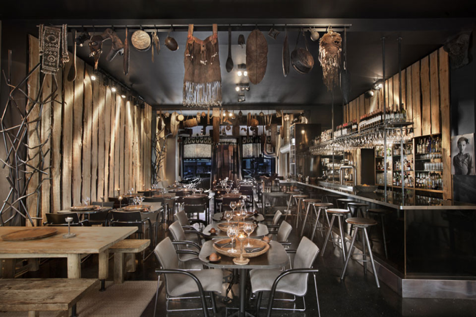
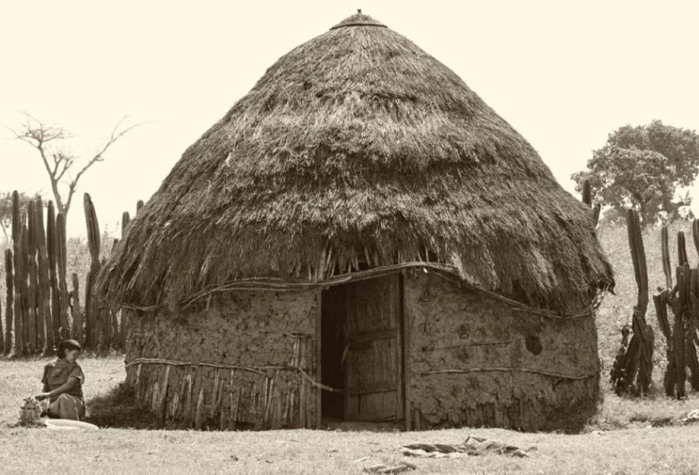
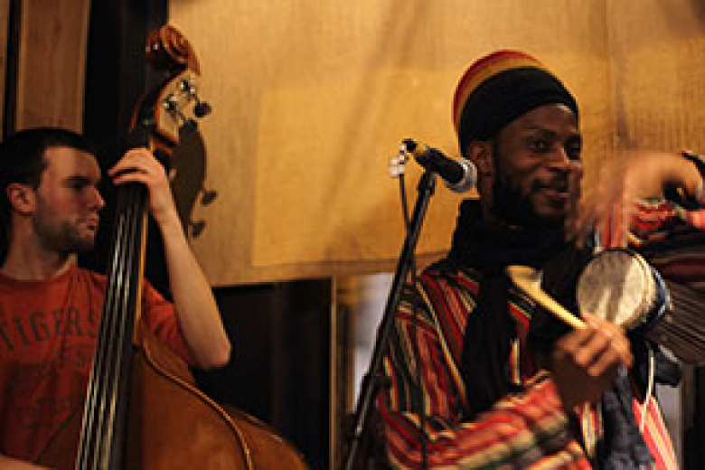

Un plongeon dans les plus belles traditions d'Ethiopie
Le Toukoul
Un plongeon dans les plus belles traditions d'Ethiopie
Le Toukoul
Un plongeon dans les plus belles traditions d'Ethiopie
Le Toukoul
Un plongeon dans les plus belles traditions d'Ethiopie
Le Toukoul
Un plongeon dans les plus belles traditions d'Ethiopie
Le Toukoul
Un plongeon dans les plus belles traditions d'Ethiopie
INFOS
CONCERTS
HORAIRES OUVERTURE CUISINE
Lundi à vendredi
18h00 à 23h00
Samedi
12h00 à 15h30 / 18h00 à 23h00
Dimanche
12h00 à 15h30 / 18h00 à 22h30
HORAIRES OUVERTURE TOUKOUL
Les soirs: du lundi au dimanche
Les midis: samedi et dimanche

LE TOUKOUL Le «Toukoul» vous accueille dans un décor travaillé aux ambiances tropicales. Les différents éléments qui le composent proviennent directement d’Ethiopie et vous font déjà faire vos premiers pas à la découverte de la culture éthiopienne.
Une cuisine variée vous est proposée. L’échange, le partage et la convivialité sont les maîtres mots de notre restaurant. En un seul repas, vous pourrez vous en rendre compte par vous-même.
Traditionnellement, la base de notre gastronomie est l’injera (galette de tef), qui sert à la fois d’assiette et de couverts. Un seul plateau par table permet un mélange des plats et des saveurs.
N’hésitez pas à demander « La gourcha » qui signifie donner à manger à l’autre de la main à la bouche. Nous nous ferons un plaisir de vous montrer.
Pour les enfants de moins de 12 ans, les plats sont à moitié prix.

C’EST QUOI UN TOUKOUL ? Un Toukoul, avant tout, est une hutte traditionnelle éthiopienne. Celle-ci est fabriquée sur une base de bois au-dessus de laquelle du torchis, un mélange de terre battue et de paille, est appliqué et lissé à la main. Grâce à l’humidité du mélange, une température fraîche peut être maintenue à l’intérieure. Enfin, s’il fait vraiment trop chaud, il suffit de ré-humidifier le tout. Simple et efficace!

DÉCOUVERTES MUSICALES Le TOUKOUL est également un lieu de découvertes.
Votre repas est accompagné d’une ambiance musicale africaine et particulièrement éthiopienne tout au long de la soirée.
Un petit goût acoustique qui viendra accompagner votre repas.
Nous vous invitons à nous rejoindre rapidement pour un repas tout à fait dépaysant !